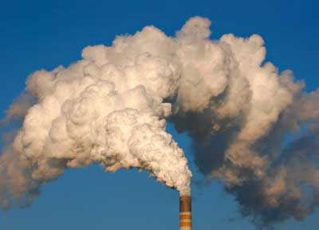

As shown in a graph of carbon emissions and gross national product by country, the world’s wealthiest nations are also the world’s largest per capita emitters of carbon dioxide (CO2), the leading pollutant driving global warming. But now the country that emits the most CO2 per capita, the United States, is finally about to declare that the gas (along with five other greenhouse gases) “endangers the public health and welfare of current and future generations.”
In what has been called the first step toward regulating global warming-related pollution, the U.S. Environmental Protection Agency (EPA) on April 17 issued a proposed finding that six greenhouse gases - CO2, methane, nitrous oxide, hydrofluorocarbons, perfluorocarbons and sulfur hexafluoride - are air pollutants as defined by the Clean Air Act. The finding was based on a broad, peer-reviewed scientific study ordered by the U.S. Supreme Court in 2007. The EPA’s proposed rule states clearly that current atmospheric levels of these chemicals are “likely the cause of the observed increase in average temperatures and other climatic changes.”
“This finding confirms that greenhouse gas pollution is a problem now and for future generations,” said EPA Administrator Lisa Jackson when she introduced the proposed rule.
As we went to press, the proposal entered a 60-day public comment period. You can voice your opinion at Regulations.gov through mid-June.
|
 ISTOCKPHOTO Measurements of carbon dioxide emissions and gross national product for 38 countries show that the world’s wealthiest nations are also the world’s largest per capita emitters of this greenhouse gas. |
|
|